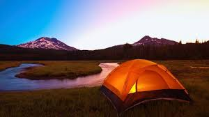

Scenic Campgrounds

There are thousands of campgrounds located throughout the United States but some offer more than others. As far as scenery is concerned there are certain campgrounds that offer picturesque views all year long. These campgrounds are a great choice for those seeking idyllic hiking experiences, natural sites for painting or sketching, or beautiful areas to photograph. Regardless of your reasons for visiting these campgrounds, the scenery found at each one will leave you breathless.
Some of the camp grounds in Georgia are:
- Stone Mountain Park Campground
- Woodall’s rates Stone Mountain Park as Georgia’s number one campground. The campground sits in Stone Mountain Park, the state’s most popular natural attraction. The campground has 446 sites, including 210 full hookup sites, 191 partial hook-up sites and 45 primitive tent camping sites. The campground features WiFi at some of its RV sites, a swimming pool, sand volleyball, playground, general store with camping and fishing gear, and rowboat rental. While the campground does not require reservations, it does recommend them.
- Holiday Harbor Marina and Campground
- Located just 25 minutes north of Atlanta in Acworth, Georgia, Holiday Harbor on Lake Allatoona is Atlanta’s closest marina. In addition to the services of a marina, Holiday Harbor has a lakefront campground, which features 20 lakeside or lake view lots. According to Camp Rate, the sites have 30-amp hookup and water, with a dump station at the camp exit. The pet-friendly campground welcomes animals, but they must be on a leash. Campers can use the campground’s launch ramp or dock their boats on site. The campground offers wireless Internet, a lake swimming area with play structures, and a full service restaurant.
- Bear Creek (Ellijay)
- This area is perfect for experienced campers who love to mountain bike. There are trails here from seven to 20 miles in length. Also, one of Georgia’s largest trees, the Gennett Poplar. Campers must walk-in, as the site is accessed via a narrow wooden bridge. There are two toilets, but no other amenities.
- Chattahoochee Bend State Park (Newnan)
- One of Georgia’s newer State Parks, this is a great place to find adventure & relaxation at all levels of camping comfort. During the day, you will find yourself hiking the trails, paddling & fishing along Georgia’s beloved Chattahoochee River and playing with the kids at the playground. For the evenings, you have a wide variety of options from parking your RV, pitching the family tent on a platform or loading your gear on a kayak and paddling to a more secluded, primitive site. Some sites include electric and all but the backcountry sites have access to a restroom.
- Cloudland Canyon State Park (Rising Fawn)
- Often cited as the best state park in Georgia, there are rugged views and wonderful hiking. Backcountry campsites are available; the hike-in distance is a moderate 1-mile. Pit privys are available, as well as a fire ring and picnic table at each site. Back-in sites include water and electricity. Walk-in sites include water, restrooms, a fire ring, and picnic tables. There is a designated parking area, with showers and restrooms also. If you’re interested in caving, consider hooking up with Georgia Girl Guides for a wild and muddy time.